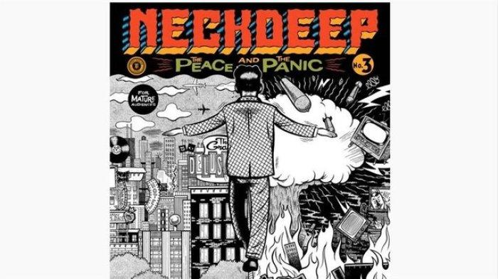

Neckdeep which contains 3 vocalists
The journey of Neck Deep music began when Ben Barlow, the vocalist of the neck deep met former main guitarist Lloyd Roberts who then agreed to create a pop-punk band with a debut single release that became the door and their first step in their career in the pop punk music scene.